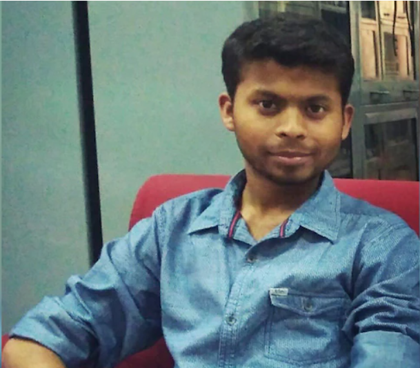

Dr Anas Mujahid
A young doctor at Guru Tegh Bahadur (GTB) Hospital succumbed to Covid-19-related complications on Sunday within hours of testing positive for the infection. Dr Anas Mujahid, 26, was working at the GTB Hospital which has been converted into a designated Covid-19 hospital. He had completed his internship after MBBS in January. A resident of North-East Delhi’s Bhagirathi Vihar, the 26-year-old doctor was on duty at the Ob-Gyn ward till Saturday afternoon. He got tested for the virus at 8 pm, as per an Indian Express report, and died due to intracranial bleeding around 3 am on Sunday.
Dr Manu

A 27-year old doctor working at a primary health centre in Chintamani, Chikkballapur district, succumbed to Covid-19 on Wednesday. Dr Manu V, who graduated from Bangalore Medical College and Research Institute in 2012, was a covid warrior working as medical officer in Burudugunte PHC. Dr Manu, was diagnosed with Covid-19 and was under treatment in a Bengaluru Hospital. He was born with congenital bone disease called Rickets and required support to move around. He died despite being fully vaccinated against Covid.